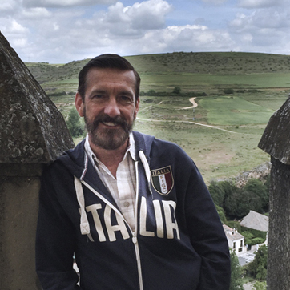

About Me

Danny Sprouse is currently an associate director for a nonprofit in Atlanta, Georgia. He works with disadvantaged and marginalized populations to improve overall health and wellness outcomes through the prevention of HIV and other sexually transmitted diseases. He oversees a team of 18 employees providing a range of health-oriented services and programs; manages a budget of nearly $2 million federal and state dollars; and serves as a member of the agency’s senior leadership team, being responsible for implementation of the organization’s strategic plan set forth by the Chief Operations Officer and Board of Directors.
Danny believes that just as by teaching others we can learn, by helping others we can help ourselves: to grow, to change, to become better human citizens of the world. Danny spearheaded the cultural diversity institute at the agency, and continues to work with other staff to foster a welcoming working environment with respect to persons from diverse backgrounds,origins, orientations and cultural identity.
Danny is passionate about creating. That can be through his hobby as a photographer, his writing competitive grant applications at work, or simply growing flowers and vegetables in his garden. With the additional training in full-stack web development, Danny’s passion for creating will be expanded to the web, where he plans to focus on CSS, JavaScript and mobile applications.
Danny is a trained behavioral health specialist. He is a licensed professional counselor and has worked as a psychotherapist in both a clinic setting as well as his own private practice. He holds specializations in sexual health, addictions and organizational psychology. Danny will utilize his behavioral health background to enhance his front-end development work to enhance the user experience and in turn meet and exceed his client’s expectations.
Danny holds a bachelor’s degree in psychology with a minor in sociology, and a master’s degree in counseling and education. He also completed two years of business school and completed one year of photography training. For fun, Danny loves to travel, go on long hikes, engage in battle with his PS and Xbox systems, spend time with friends, and provide the entertainment for his two cats, Azul and Aurora.